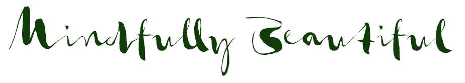

home
about
services
service menu
eyelashes
prep & aftercare
your natural lashes
gallery
book an appt
home
about
services
service menu
eyelashes
prep & aftercare
your natural lashes
gallery
book an appt
location
Paul Strom Salon & Day Spa
Rockaway Beach Plaza
450 Dondee Way, Suite 8
Pacifica, CA 94044
hours
Tuesday-Saturday
9am-5pm by appointment
text or call
415.533.1262
I believe your salon experience is about more than just your exterior beauty service, it's about feeling your best inside and out. I take my time to listen to each client, from your consultation to styling, to ensure you walk out of the salon looking your best and feeling confident in your own natural beauty.
I specialize in creative/special effects color - if you've always wanted to add a little 'flare' to your look - to have purple hair or even just touches of color - come in for a free consultation. I also offer balayagè highlights and ombrè, hair straightening treatments and hair and lash extensions.
I keep up on the latest trends in beauty, fashion, hair and lash design. To stay current and give my clients the best service possible I seek out opportunities for advanced education in my field. In the past year I attended the American Board of Certified Hair Colorist Summit and took courses in color correction and creative hair color; studied advanced precision hair cutting at the Vidal Sassoon Academy; received certification with Brazilian Blow-out and learned advanced Russian Volume lash extension techniques with master lash artist, Nadia Afanaseva.
I use the healthiest professional hair products on the market that are also free of many known toxins. Many of my products are organic, vegan, ammonia-free, formaldehyde-free, PPD-free, paraben-free, gluten-free & free of other known allergens and irritants. This includes hair color & formaldehyde-free hair straightening treatments. If you have Celiac's disease, eczema & gluten sensitivities or other allergies - I maybe be able to help.
I am also a certified lash extension technician with an artistic eye who will create the perfect lash look customized to your eye shape and lifestyle. I use silk & mink lashes and have been trained and certified in several different techniques and can create a natural look, 'cat-eyes', 3D volume and more. Celebrities have been getting lash extensions for years - now this celebrity secret is a luxury service that you can afford!
Come in, relax and let me take care of you and send you back out into the world renewed and refreshed! Thank you for visiting this site. I look forward to meeting you soon.